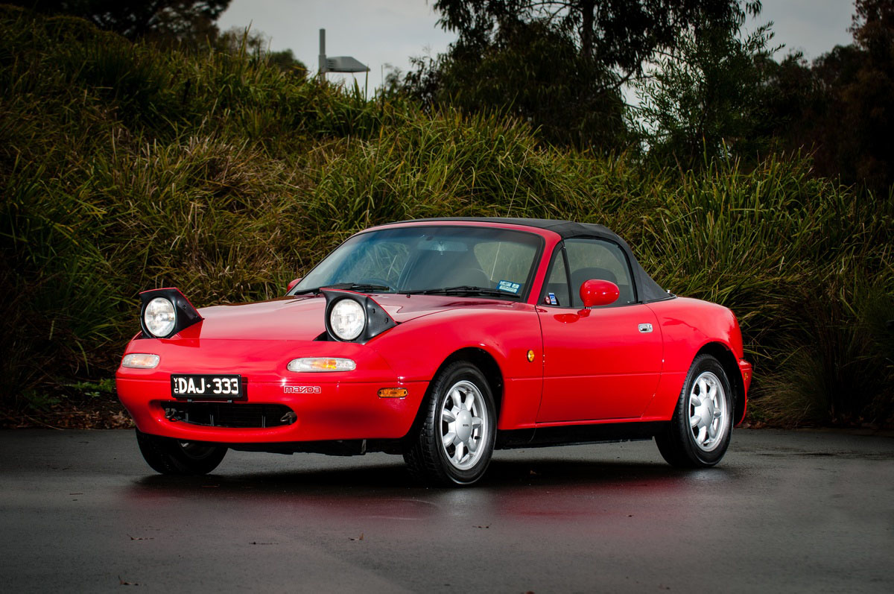
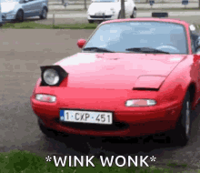
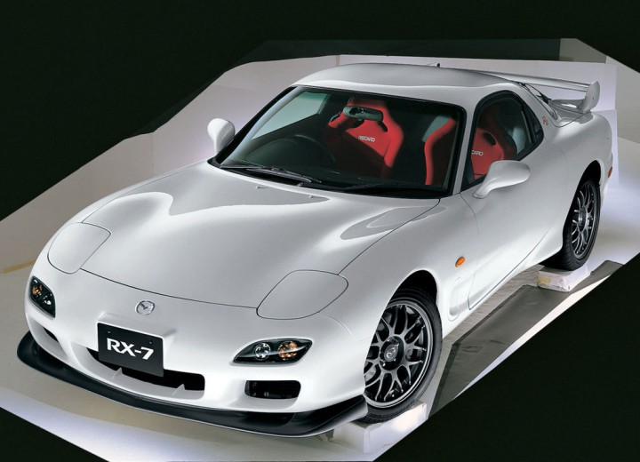

En esta página se mostrarán los coches más famosos de Mazda que andaban
por las calles en los años 90.
Esta fue la primera generación del MX5 (NA), salió a la venta en 1989 con motores de 4 cilindros en linea
de 1.6 L que desarrollaban 115 CV. Posteriormente en el año 1994 se sacó al mercado una versión más
potente de 133 CV y 1,8 L, y ese mismo año se lanzó un motor 1.6 L de 90 CV. Desde el principio, el MX5, se diseñó con
la filosofía 人馬一体 (Jinba-ittai), que en japonés significa que el jinete y su caballo
son uno.

Este coche debe su fama a su agilidad, al ser un convertible de muy bajo peso con tracción trasera, y a sus
famosos faros escamoteables que le dan mucha pesonalidad

Esta es la segunda generación de la famosa línea de Mazda, con un motor tipo rotativo / Wankel de 1,3 litros,
ofrecía 150 CV con aspiración natural, mientras que las versiones
turboalimentadas generaban de 180 a 200 CV. En su versión
más potente, lograba el 0 a 100 km/h en 6 segundos y una velocidad máxima de 240 km/h. Tanto esta generación del rx7 como la
siguiente cuenta con tracción trasera, una configuración perfecta para conducir con agilidad y para hacer drift.
En su tercera y última generación que llegó en 1992 y duró hasta 2002, fue un verdadero automóvil de alto
rendimiento. Con un nuevo turbocompresor doble secuencial, el motor aumentó la potencia a
239 CV. Fue considerado como el mejor de todos los RX-7, por su fácil manejo y su capacidad de aceleración,
y una velocidad máxima limitada de 250 km/h.
Su imagen era más redondeada que la de sus predecesores,
un largo capó, extensiones en los bajos y un llamativo alerón, consiguiendo también un perfil muy bajo.

Esta generación del rx7 destaca también por su aparición en la película Fast and Furious conducido
por el actor Vin Diesel, y en la serie de Anime / Manga Initial D, conducido por Takahashi Keisuke.